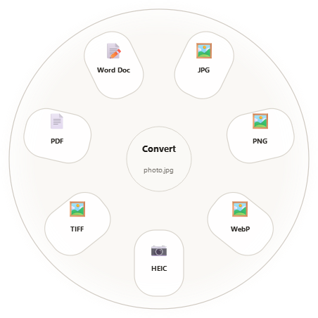

A small companion for converting, editing, and organizing files. Bring the action to the file instead of hunting through menus.
The desktop app works locally. The preview below uses sample files and never reads anything from your computer.

Choose an action from the wheel beside a file
ConvertChoose an output the file can actually use.
EditOpen focused tools for images, media, PDFs, and documents.
OrganizeCopy, move, float, or open a file’s folder in a terminal.
Three quick paths
One gesture. The right set of choices.
On Windows, drag a file while holding Shift, Alt + Shift, or Ctrl + Shift. On macOS and Linux, use the companion window to choose Convert, Tools, or Actions.
This Windows-style preview uses sample files. Double-click an icon to pick it up, drag it, and hold Shift, Alt + Shift, or Ctrl + Shift. The wheel stays open after release so you can choose a petal.
Double-click an icon and drag with a shortcut, or select a sample and use one of these buttons to open a wheel.
This is a visual preview. It does not open or change real files.
What FilePetal does
Three wheels for everyday file work.
Hold a modifier while dragging on Windows. On macOS and Linux, use the companion window and choose a wheel. Options depend on the file type and installed engines.
01
Shift
Convert
FilePetal shows outputs supported for the selected file. It doesn’t offer a conversion just because two formats look similar.
FilePetal’s desktop conversions and editing tools run locally. The website and desktop app make separate network requests for separate purposes.
Desktop app
The app does not upload selected files or conversion results to a cloud converter. It writes outputs locally, leaving the source files unchanged. Some capabilities need local tools such as FFmpeg; those are not included in current release ZIPs.
There is no required FilePetal account or app telemetry in this build.
Download website
The site reads latest ZIP links and per-asset download counts from GitHub Releases. The counts measure download requests, not unique people or installations.
Interactive preview
The interactive preview uses five sample file icons built into the page. It does not read, upload, or convert files from your computer.
Settings and updates
Preferences are stored in your local user profile. The current app does not automatically check or install updates. See how to update a ZIP installation.
Open a question to read the answer. Only one answer stays open at a time.
Does FilePetal need the internet?
File conversions and editing run on your device. The app needs internet access only for actions such as downloading an update or release. Audio and video features need FFmpeg and FFprobe installed locally.
How do I update the current ZIP version?
There is no automatic updater yet. Quit FilePetal, download the latest ZIP, extract it into a new folder, and launch that copy. Once you confirm it works, remove the old app folder and ZIP if you want. You do not need to uninstall; preferences live separately in your user profile.
The tray’s Check for Updates item currently displays a manual-update message; it does not actually query GitHub. An in-app version check with an “Update available” prompt is the sensible next step. Automatic installation needs a separate updater for each operating system.
Are downloads available for all four computer targets?
Yes: Windows x64, macOS Apple silicon, macOS Intel, and Linux x64. Current releases are portable ZIP packages. See the downloads page for system requirements and installation instructions.
Why does macOS warn me when opening FilePetal?
The community builds are not signed or notarized with an Apple Developer ID. On first launch, Control-click FilePetal.app in Finder, choose Open, then confirm. Read the Mac guide for the chip-specific download.
Which Linux systems are supported?
The published Linux build targets x86_64 Ubuntu 22.04 or newer with glibc 2.34 or newer. Other distributions may work if their system libraries meet that baseline.
Are download counts unique people?
No. Counts come from GitHub’s release asset download totals. They count download requests, not unique people, installations, or active users.
Does the browser demo change my files?
No. It uses sample file icons and only previews which wheel and output name would appear. It never reads local files or performs conversions.
FilePetal releases
Choose your download.
These packages are built for 64-bit Windows, macOS, and Linux. The latest version and asset links are read from GitHub Releases.
Checking GitHub Releases…Download counts are GitHub asset downloads, not unique users.
Extract the ZIP, then run chmod +x FilePetal/FilePetal and ./FilePetal/FilePetal.
Updating a ZIP installation
The current public packages do not update themselves. Quit FilePetal, download and extract the newer ZIP into a new folder, and launch that copy. After confirming it works, you can remove the old app folder and the old ZIP. Your preferences are kept separately in your user profile.
The tray menu’s Check for Updates entry is currently a manual-update notice; it does not yet check GitHub for a newer version. A useful next step is an in-app version check that offers the latest download. Automatic installation should wait until each platform has a reliable, signed update package.
Where the counts live
Each number beside a download button comes from its ZIP asset on GitHub Releases. The public Releases page is the tracking dashboard; open an older release to see its package totals. GitHub does not identify individual downloaders, so these numbers are not unique-user counts.